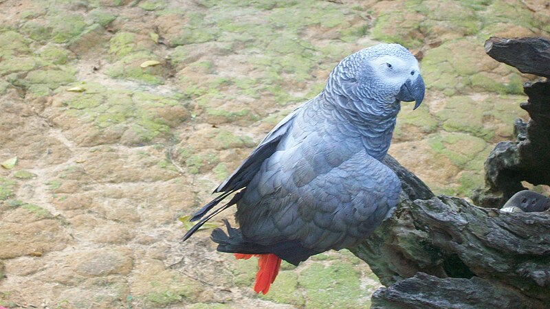

“ LLM은 뜻을 이해하지 않고, 그저 학습한 거대한
글뭉치에서 그럴듯한 말을 통계적으로 짜낼 뿐이다. — 벤더, 게브루, 맥밀런-메이저, 미첼 (2021)
저자들의 구분은 의외로 단순합니다. 겉모양은 글자·소리·문장 그 자체. 진짜 뜻은 그 너머의 지향성 — 그 말이 무엇을 가리키는지, 무엇을 의도하는지. LLM은 겉모양의 통계만 학습할 뿐, 진짜 뜻을 가진 적이 없다는 주장입니다.
비유는 앵무새입니다. 사람의 말을 똑같이 흉내 내는 그 새가, 자기가 한 말을 이해하고 있다고 우리는 생각하지 않죠.
